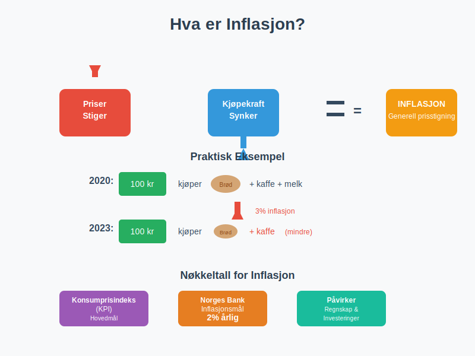
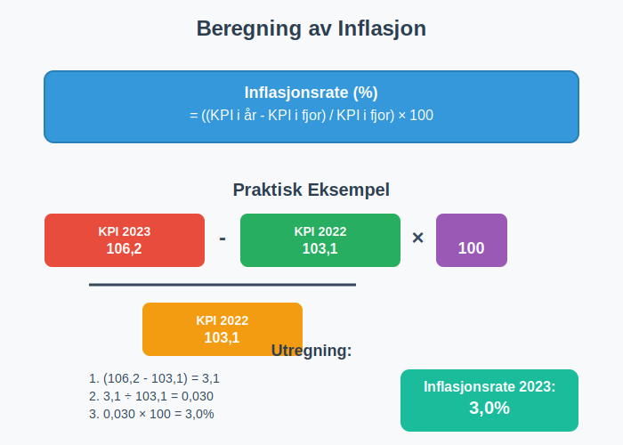
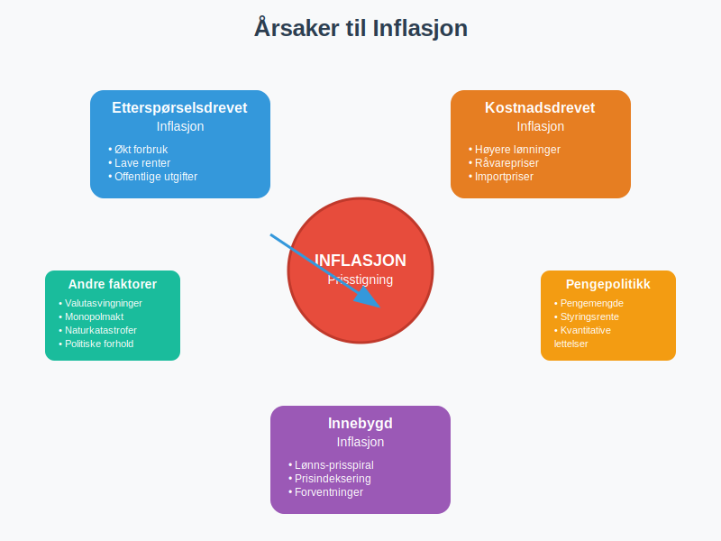
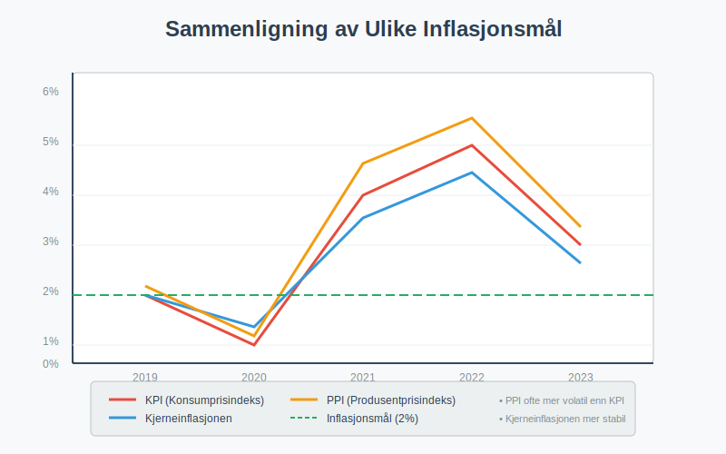
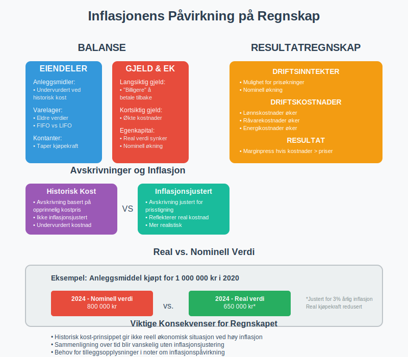
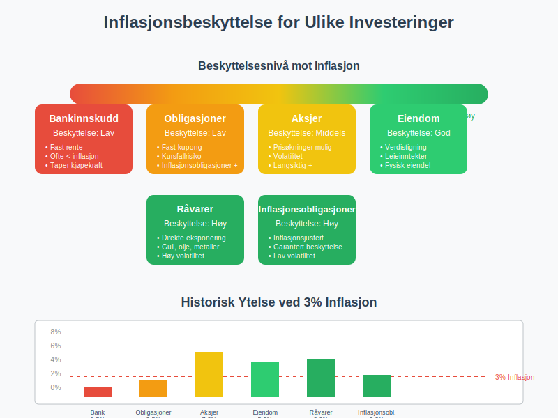
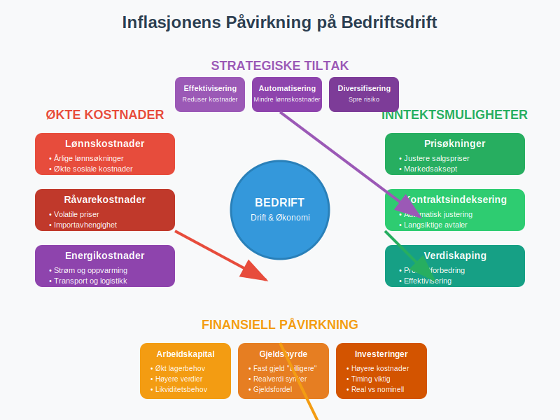
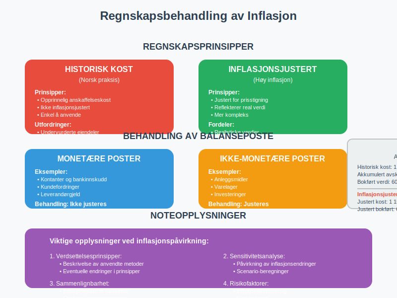
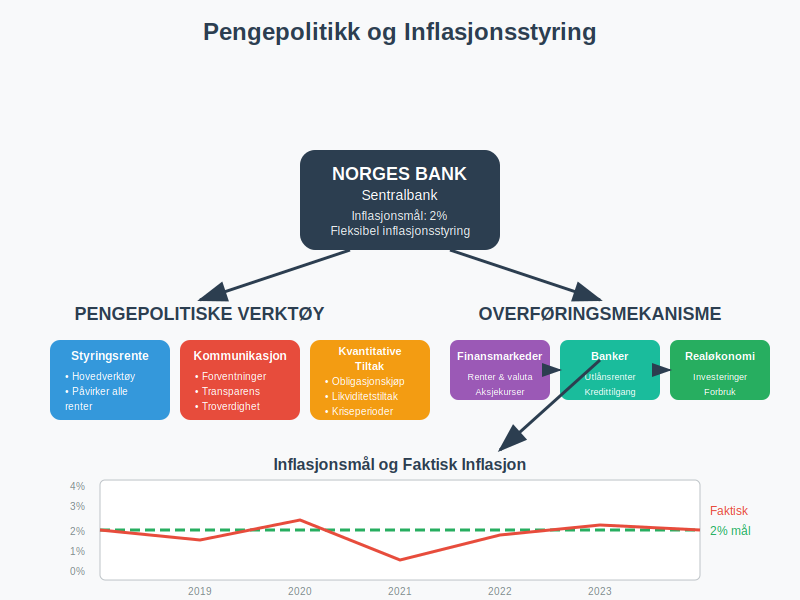
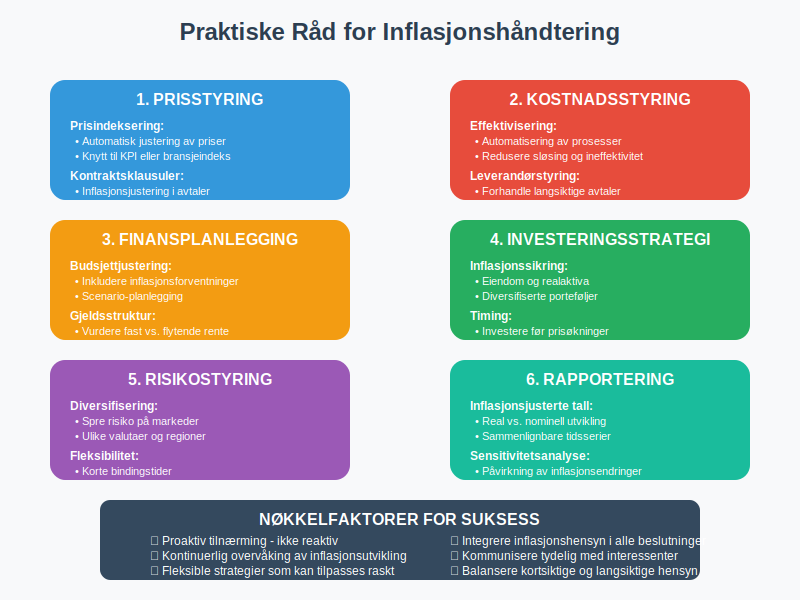

For en helhetlig oversikt over økonomiens store mekanismer, se Makroøkonomi.
For å forstå hvordan prisendringer påvirker både nominalt og reelt BNP, se Hva er BNP?.

Hva er Inflasjon?
Inflasjon oppstår når den generelle prisen på varer og tjenester stiger over tid. Dette betyr at samme mengde penger kjøper mindre enn før. Inflasjon måles vanligvis som en årlig prosentvis økning i konsumprisindeksen (KPI).
Grunnleggende Formel for Inflasjon
Inflasjonsrate (%) = ((KPI i år - KPI i fjor) / KPI i fjor) × 100
Tall for KPI publiseres månedlig av Statistisk sentralbyrå (SSB), som er primærkilde for prisindekser.

Årsaker til Inflasjon
1. Etterspørselsdrevet Inflasjon
Etterspørselsdrevet inflasjon oppstår når den totale etterspørselen i økonomien overstiger tilbudet:
- Økt forbruk: Høyere inntekter fører til mer forbruk
- Ekspansiv pengepolitikk: Lave styringsrenten stimulerer økonomien og påvirker konjunktursvingninger
- Offentlige utgifter: Statlige investeringer øker etterspørselen
2. Kostnadsdrevet Inflasjon
Kostnadsdrevet inflasjon skyldes økte produksjonskostnader:
- Høyere lønnskostnader: Lønnsøkninger øker produksjonskostnadene
- Råvarepriser: Økte priser på olje, metaller og andre råvarer
- Importpriser: Svekket valuta gjør import dyrere
3. Innebygd Inflasjon
Innebygd inflasjon oppstår når inflasjonsforventninger blir selvoppfyllende:
- Lønns-prisspiral: Arbeidere krever høyere lønn, bedrifter øker priser
- Prisindeksering: Kontrakter justeres automatisk for inflasjon

Måling av Inflasjon
Konsumprisindeksen (KPI)
KPI er det mest brukte målet på inflasjon i Norge:
| Komponent | Vekting i KPI | Beskrivelse |
|---|---|---|
| Mat og alkoholfrie drikkevarer | 12,8% | Dagligvarer og matvarer |
| Bolig, lys og brensel | 25,1% | Husleie, strøm, oppvarming |
| Transport | 16,2% | Bil, drivstoff, kollektivtransport |
| Klær og skotøy | 4,1% | Tekstiler og fottøy |
| Møbler og husholdningsartikler | 5,8% | Innbo og husholdningsutstyr |
Andre Inflasjonsmål
- Kjerneinflasjonen: KPI justert for volatile komponenter som energi og mat
- Produsentprisindeksen (PPI): Måler prisendringer på produsentnivå
- BNP-deflatoren: Bredere mål som inkluderer alle varer og tjenester
- Big Mac-indeksen: En uformell indikator for kjøpekraftsparitet (PPP) basert på prisen på en Big Mac. Les mer om Big Mac-indeksen.

Inflasjonens Påvirkning på Regnskap
1. Historisk Kost vs. Løpende Verdi
Historisk kost-prinsippet i regnskapet påvirkes av inflasjon:
- Anleggsmidler: Anleggsmidler kan være underverdsatt
- Varelager: Eldre lagerverdier reflekterer ikke dagens priser
- Avskrivninger: Avskrivninger basert på historiske kostnader
2. Påvirkning på Resultatregnskap
Inflasjon påvirker driftskostnader og driftsinntekter:
- Økte kostnader: Lønn, råvarer, energi
- Prisøkninger: Mulighet til å øke salgspriser
- Marginpress: Hvis kostnader stiger raskere enn priser
3. Balansepåvirkning
Inflasjon påvirker balansen på flere måter:
- Eiendelsverdier: Kan være undervurdert ved historisk kost
- Gjeldsverdier: Fast gjeld blir “billigere” å betale tilbake
- Egenkapital: Real verdi kan reduseres

Inflasjon og Investeringer
Real vs. Nominell Avkastning
Nominell avkastning justeres for inflasjon for å finne real avkastning:
Real avkastning = Nominell avkastning - Inflasjonsrate
Eksempel: Inflasjonsjustering av Avkastning
En investering gir 8% nominell avkastning ved 3% inflasjon:
- Nominell avkastning: 8%
- Inflasjonsrate: 3%
- Real avkastning: 8% - 3% = 5%
Inflasjonsbeskyttelse
Ulike investeringer gir forskjellig beskyttelse mot inflasjon:
| Investeringstype | Inflasjonsbeskyttelse | Forklaring |
|---|---|---|
| Aksjer | Moderat til høy | Selskaper kan øke priser |
| Eiendom | Høy | Eiendomsverdier følger inflasjon |
| Obligasjoner | Lav | Fast rente taper verdi |
| Bankinnskudd | Meget lav | Ofte lavere rente enn inflasjon |
| Råvarer | Høy | Direkte eksponering mot prisstigning |

Inflasjon og Bedriftsdrift
Kostnadsplanlegging
Inflasjon påvirker budsjettering og kostnadsplanlegging:
- Lønnskostnader: Årlige lønnsøkninger
- Råvarekostnader: Prisvolatilitet på innsatsfaktorer
- Energikostnader: Strøm og drivstoff
- Husleie: Indeksregulering av leiekontrakter
Prissetting
Bedrifter må tilpasse prissetting til inflasjon:
- Prisindeksering: Automatisk justering av priser
- Kontraktsklausuler: Inflasjonsjustering i langsiktige avtaler
- Konkurranseevne: Balansere priser mot konkurrenter
Finansiering
Inflasjon påvirker finansiering:
- Lånerenter: Nominelle renter inkluderer inflasjonspremie
- Real gjeldsbyrde: Inflasjon reduserer realverdien av gjeld
- Arbeidskapital: Økt behov for arbeidskapital ved prisstigning

Regnskapsbehandling av Inflasjon
Inflasjonsjustering av Regnskapet
I land med høy inflasjon brukes inflasjonsjustert regnskap:
- Monetære poster: Justeres ikke (kontanter, fordringer, gjeld)
- Ikke-monetære poster: Justeres med inflasjonsfaktor
- Resultatposter: Justeres til gjennomsnittlig kjøpekraft
Norsk Praksis
I Norge med lav inflasjon brukes historisk kost med unntak:
- Finansielle instrumenter: Virkelig verdi
- Investeringseiendom: Kan verdsettes til virkelig verdi
- Nedskrivninger: Når bokført verdi overstiger gjenvinnbart beløp
Noteopplysninger
Viktige noteopplysninger om inflasjonspåvirkning:
- Avskrivningsmetoder og levetid
- Verdsettelsesprinsipper for eiendeler
- Sensitivitetsanalyser for inflasjonsendringer

Inflasjon og Skatt
Skattemessige Konsekvenser
Inflasjon påvirker skatteberegningen:
- Nominelle gevinster: Beskattes selv om real gevinst er null
- Avskrivninger: Basert på historisk kost, ikke inflasjonsjustert
- Lagerverdi: FIFO vs. LIFO påvirkes forskjellig
Eksempel: Inflasjon og Kapitalgevinst
Kjøp av aksje for 100 000 kr, salg for 130 000 kr etter 5 år med 5% årlig inflasjon:
- Nominell gevinst: 30 000 kr (30%)
- Inflasjonsjustert kjøpspris: 100 000 × 1,05^5 = 127 628 kr
- Real gevinst: 130 000 - 127 628 = 2 372 kr (1,9%)
- Skatt betales av: 30 000 kr (nominell gevinst)
Inflasjonsmål og Pengepolitikk
Norges Banks Inflasjonsmål
Norges Bank har et inflasjonsmål på 2% årlig:
- Fleksibel inflasjonsstyring: Tar hensyn til økonomiske svingninger
- Styringsrente: Hovedverktøy for å påvirke inflasjon
- Kommunikasjon: Tydelige signaler om pengepolitikken
Konsekvenser for Bedrifter
Inflasjonsmålet påvirker bedriftenes planlegging:
- Forutsigbarhet: Stabil inflasjon letter langsiktig planlegging
- Rentenivå: Påvirker finansieringskostnader
- Valutakurs: Inflasjonsdifferanser påvirker konkurranseevne

Praktiske Råd for Bedrifter
Inflasjonssikring
Strategier for å håndtere inflasjon:
- Prisindeksering: Automatisk justering av priser og kontrakter
- Diversifisering: Spre risiko på ulike markeder og valutaer
- Fleksible kontrakter: Korte bindingstider eller justeringsklausuler
- Lagerstyring: Optimalisere lagernivå ved prisvolatilitet
Finansiell Planlegging
Tilpasninger i finansiell planlegging:
- Budsjettjustering: Inkludere inflasjonsforventninger
- Investeringsbeslutninger: Bruke real avkastning
- Gjeldsstruktur: Vurdere fast vs. flytende rente
- Valutasikring: Beskytte mot valutasvingninger
Rapportering og Analyse
Forbedret rapportering:
- Inflasjonsjusterte tall: Sammenligne reelle utviklingstrender
- Sensitivitetsanalyser: Vise påvirkning av inflasjonsendringer
- Nøkkeltall: Justere for inflasjon i flerårige sammenligninger

Vanlige Feil og Misforståelser
Feil 1: Ignorere Inflasjonspåvirkning
Mange bedrifter undervurderer inflasjonens påvirkning på:
- Langsiktige kontrakter uten prisregulering
- Investeringsbeslutninger basert på nominelle tall
- Sammenligning av flerårige resultater
Feil 2: Feil Inflasjonsmål
Bruke feil inflasjonsmål for spesifikke formål:
- Generell KPI vs. bransje-spesifikk inflasjon
- Nasjonal inflasjon vs. regional prisstigning
- Historisk inflasjon vs. fremtidige forventninger
Feil 3: Manglende Inflasjonssikring
Ikke beskytte seg mot inflasjon:
- Kun bankinnskudd som taper kjøpekraft
- Lange fastrentelån uten inflasjonsjustering
- Faste priser på langsiktige leveranser
Fremtidige Trender
Teknologi og Inflasjon
Teknologisk utvikling påvirker inflasjon:
- Digitalisering: Kan redusere kostnader og priser
- Automatisering: Reduserer lønnskostnader
- Globalisering: Økt konkurranse holder priser nede
Miljø og Inflasjon
Miljøhensyn kan påvirke inflasjon:
- Karbonavgifter: Øker kostnader for utslippsintensive bedrifter
- Grønn omstilling: Investeringer kan påvirke priser
- Klimaendringer: Kan påvirke råvarepriser
Demografiske Endringer
Befolkningsutvikling påvirker inflasjon:
- Aldring: Endret forbruksmønster og arbeidstilbud
- Urbanisering: Påvirker boligpriser og lønnskostnader
- Migrasjon: Påvirker arbeidstilbud og etterspørsel
Konklusjon
Inflasjon er et fundamentalt økonomisk fenomen som påvirker alle aspekter av bedriftsdrift og regnskap. For å lykkes i et inflasjonspreget miljø må bedrifter:
- Forstå inflasjonens årsaker og konsekvenser
- Tilpasse regnskaps- og rapporteringspraksis
- Implementere strategier for inflasjonssikring
- Overvåke inflasjonsutvikling og justere planer
Ved å ta høyde for inflasjon i alle finansielle beslutninger kan bedrifter beskytte sin formuesverdi og opprettholde konkurranseevnen over tid.
Husk: Inflasjon er ikke bare et makroøkonomisk fenomen - det påvirker hver enkelt bedrifts daglige drift og langsiktige strategi. Proaktiv håndtering av inflasjon er avgjørende for bærekraftig vekst og lønnsomhet.
For scenarier med både høy inflasjon og lav vekst, se Hva er Stagflasjon?.